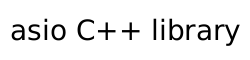

 |
Converting assignment operator.
template< typename OtherExecutor> inline_or_executor & operator=( const inline_or_executor< OtherExecutor > & other);
This assignment operator is only valid if the OtherExecutor
type is convertible to Executor.